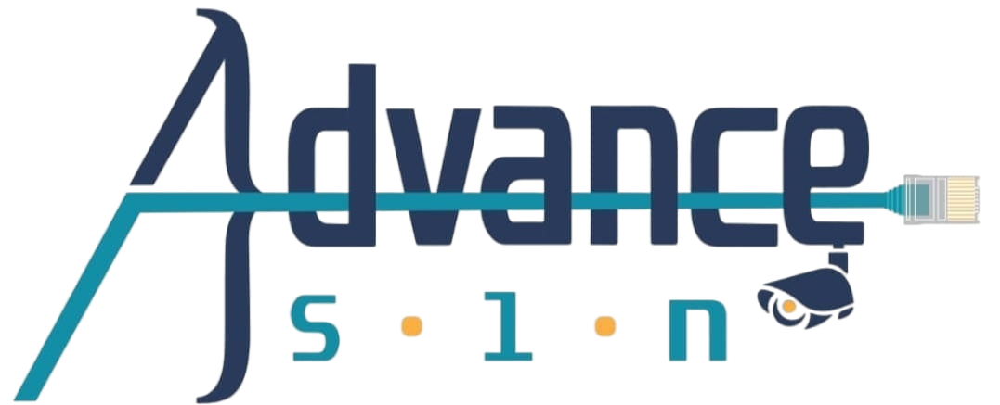

<nav class="navbar navbar-expand-lg bg-body-tertiary" >
  <div class="container d-flex align-items-center">
    <a>
      
    </a>
    <button
      class="navbar-toggler"
      type="button"
      data-bs-toggle="offcanvas"
      data-bs-target="#offcanvasNavbar"
      aria-controls="offcanvasNavbar"
      aria-label="Toggle navigation"
    >
      <span class="navbar-toggler-icon"></span>
    </button>
    <div
      class="offcanvas offcanvas-end"
      tabindex="-1"
      id="offcanvasNavbar"
      aria-labelledby="offcanvasNavbarLabel"
    >
      <div class="offcanvas-header">
        <h5 class="offcanvas-title" id="offcanvasNavbarLabel"></h5>
        <button
          type="button"
          class="btn-close"
          data-bs-dismiss="offcanvas"
          aria-label="Close"
        ></button>
      </div>
      <div class="offcanvas-body">
        <ul class="navbar-nav justify-content-end flex-grow-1 pe-3">
          <li
            class="nav-item"
            [@linkAnimation]="activeLink === 'home' ? 'active' : 'inactive'"
          >
            <a
              href="http://localhost:4200/index.html"
              (click)="setActiveLink('index.html')"
              [ngClass]="{ active: activeLink === 'home' }"
            >
              {{ "Home" | translate }}
            </a>
          </li>
          <li [@linkAnimation]="activeLink === 'about' ? 'active' : 'inactive'">
            <a
              [routerLink]="['/', currentLang]"
              fragment="about"
              (click)="setActiveLink('about')"
              [ngClass]="{ active: activeLink === 'about' }"
            >
              {{ "About" | translate }}
            </a>
          </li>
          <li
            [@linkAnimation]="activeLink === 'services' ? 'active' : 'inactive'"
          >
            <a
              [routerLink]="['/', currentLang]"
              fragment="services"
              (click)="setActiveLink('services')"
              [ngClass]="{ active: activeLink === 'services' }"
            >
              {{ "Services" | translate }}
            </a>
          </li>
          <li
            [@linkAnimation]="
              activeLink === 'portfolio' ? 'active' : 'inactive'
            "
          >
            <a
              [routerLink]="['/', currentLang]"
              fragment="portfolio"
              (click)="setActiveLink('portfolio')"
              [ngClass]="{ active: activeLink === 'portfolio' }"
            >
              {{ "Portfolio" | translate }}
            </a>
          </li>

          <li
            [@linkAnimation]="activeLink === 'contact' ? 'active' : 'inactive'"
          >
            <a
              [routerLink]="['/', currentLang]"
              fragment="contact"
              (click)="setActiveLink('contact')"
              [ngClass]="{ active: activeLink === 'contact' }"
            >
              {{ "Contact" | translate }}
            </a>
          </li>
          <button
            [@linkAnimation]="activeLink === 'language' ? 'active' : 'inactive'"
            mat-icon-button
            style="flex-wrap: wrap-reverse"
            [matMenuTriggerFor]="languageMenu"
            [ngClass]="{ active: activeLink === 'language' }"
            (click)="setActiveLink('language')"
            aria-label="Example icon-button with a changeLanguage"
          >
            <span class="material-symbols-outlined">{{
              "language " | translate
            }}</span>
          </button>

          <mat-menu
            #languageMenu="matMenu"
            yPosition="above"
            xPosition="before"
          >
            <button mat-menu-item (click)="changeLanguage('en')">
              {{ "English" | translate }}
            </button>
            <button mat-menu-item (click)="changeLanguage('ar')">
              {{ "Arabic" | translate }}
            </button>
          </mat-menu>
        </ul>
      </div>
    </div>
  </div>
</nav>

<!-- <li>
          <button
            mat-icon-button
            [matMenuTriggerFor]="languageMenu"
            aria-label="Example icon-button with a changeLanguage"
          >
            <span class="material-symbols-outlined">language</span>
          </button>

          <mat-menu #languageMenu="matMenu">
            <button mat-menu-item (click)="changeLanguage('en')">
              {{ "English" | translate }}
            </button>
            <button mat-menu-item (click)="changeLanguage('ar')">
              {{ "Arabic" | translate }}
            </button>
          </mat-menu>
        </li> -->
<!-- .nav-menu -->
<!-- <mat-form-field>
      
      <mat-label>{{''|translate}} <fa-icon [icon]="globeIcon"></fa-icon></mat-label>
      <mat-select>
       
        <mat-option (click)="changeLangage('en')">English</mat-option>
        <mat-option (click)="changeLangage('ar')">Arabic</mat-option>
      </mat-select>
    </mat-form-field>  -->
<!-- <li [@linkAnimation]="activeLink === 'contact' ? 'active' : 'inactive'">
      <a
        href="http://localhost:4200/#contact"
        (click)="delayedNavigation($event, 'contact', 'http://localhost:4200/#contact')"
        [ngClass]="{ active: activeLink === 'contact' }"
      >
        {{ "Contact" | translate }}
      </a>
    </li> -->
